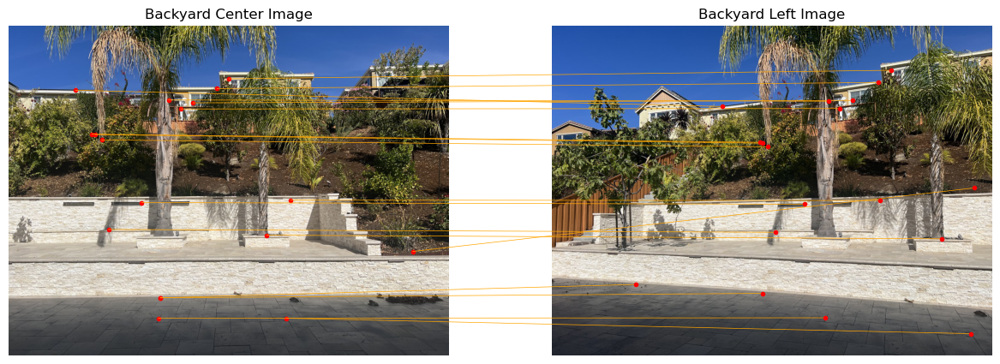

Project Overview
This project explores how one we can take advantage of homographies, projectiev warping, and image blending techniques to create image mosaics / panoramas.
Shooting Pictures
Below are the images we will stitch together:
| Left image | Center image |
|---|---|
 |
 |
Note that the photos above are the actual-sized images. In the program however, images are downsized to approximately 1200px by 900px.
We plot correspondence points on the center and left images. These will be used to compute the homography between the two images later on.
Below are the correspondence points plotted on the center and left images. We make sure to spread out the selection of points across the image to ensure a more stable and accurate homography.
| Correspondence points (numbered in order): |
|---|
Recovering Homographies
We now warp the left image to the center image using a homography we can compute from the correspondence points. An example of a homographic matrix is shown below:

|
By setting up out correspondence points as seen in the above matrix, we can solve for an approximate homographic matrix using least squares.
Warping Images
By using the homography matrix mapping points from the left image to the center image, we can create a function that can warp all pixels in the left image to the center image (w.r.t. the homography matrix).
We first compute the homography matrix from left correspondence points to the center correspondence points. We then inverse-warp the corners of the left image to the center image to find the correct sized bounding box, using our newly calculated homography matrix. Finally, we assign points in the bounding box to the left image using the homography matrix, adjusting for negative coordinates as needed.
With this, we can now warp images! Below is the result of warping the left image to the center image:
| Before warping: | After warping: |
|---|---|

|
Image Rectification
Using the image warp function from part 3, we can rectify images by mapping corners of a skewed image to a rectangle.
Below is an example of image rectification:
| The skewed photo: | After rectification: | After (manual) cropping: |
|---|---|---|
 |
||

|
 |
|

|
|
Blending Images Into a Mosaic
After warping images, we can now stitch then together to form a mosaic. In order to do this, we need to calculate the final image size of the mosaic to use as a bounding box. From there, we can place and align the images together. Afterwards, we can blend images using a multi-level blending approach with Laplacian pyramid and custom masks.
Note that blends may not always be smooth for many reasons. Manually selecting correpsondence points can cause slight misalignments, for example, especially on large images. Different lighting conditions across images can also result in visible seams even after blending, as we will see below. These can be addressed through histogram normalization and/or multi-level blending with different masks depending on the frequency.
I experimented with two blending methods: blending with a custom mask (where overlap between the two images in gray, and white only for the source image) and blending with a distance-based mask.
Below are some results:
| Placing and aligning warped image to mosaic: | Placing and aligning non-warped image to mosaic: |
|---|---|

|
| Stitched mosaic: | Blended mosaic: |
|---|---|
|
|
Below are some more results. Note that images with very similar lighting have much smoother blends (see the last result):
| Left image: | Center image: |
|---|---|

|

|
| Mosaiced image: |
|---|
| Left image: | Center image: |
|---|---|

|
| Mosaiced image (pre-blending): | Mosaiced image (using bwdist masking): |
|---|---|
Detecting Corner Features in Images
To begin automating the above process, we first need to automatically detect potential correspondence points in an image. One way to accomplish this is through Harris corner detection.
Pictured below are Harris corners detected on the following image of a backyard:
As we can see, there are far too many potential correspondence points to consider. Thus, we need a way to filter out poor correspondence points.
Adaptive Non-Maximal Suppression (ANMS)
We will use ANMS (Adaptive Non-Maximal Suppression) to filter out poor correspondence points.
Pictured below are the remaining correspondence points after applying ANMS:
Extracting Feature Descriptors
We now extract "features" corresponding to each correspondence point by taking a 40x40 pixel window centered on each point. We then downsize and normalize the features to prepare them for feature matching.
Pictured below are 25 features from the center backyard image before, after downsizing, and after normalization:
Matching Feature Descriptors
We now match features between the center and left images by flattening each feature into a 1D array, and finding its respective two nearest neighbors (aka neighboring features) in the other image. We use the cosine distance metric due to the large feature size of our flattened image vectors. We take advantage of Lowe's trick when determining potential matching pairs.
Pictured below are the matching pairs of features/correspondence points between the center and left images after feature matching. Note that there are still false positives and incorrect matches (for now).
|  |
Feature Matching with RANSAC
To eliminate false poisitives and outliers, and retain only inliers, we use RANSAC (Random Sample Consensus) to find the best inliers between the two images to use for homography when mosaicing images. These inliers will be our final correspondence point pairs.
Pictured below are the final matching pairs of correspondence points after running RANSAC:
Autostitching Images (Results)
Pictured below are some results from the new auto-stitching algorithm:
Note: Unfortunately, image blending no longer reliably works due to a current bug in the mask generation function, so some mosaics may appear to be unblended. :(

|

|
Mini Reflection
This was a very lengthy and fulfilling project. I most enjoyed firguring out how to implement ANMS and RANSAC, as it ws very satisfying to be able to automate all the work from part 1.